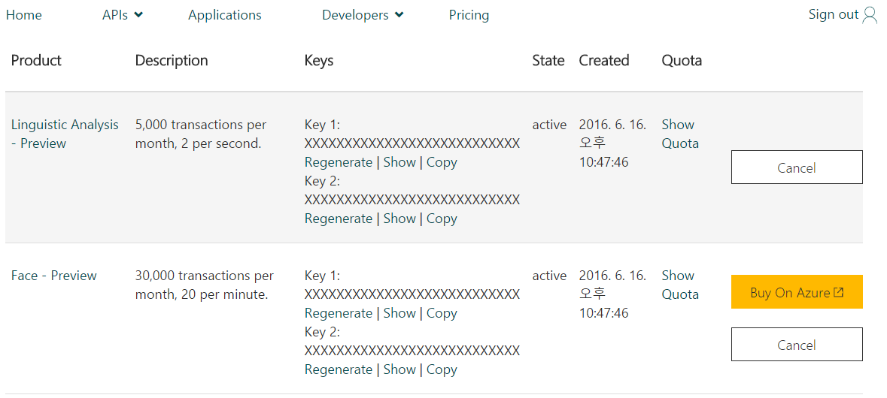
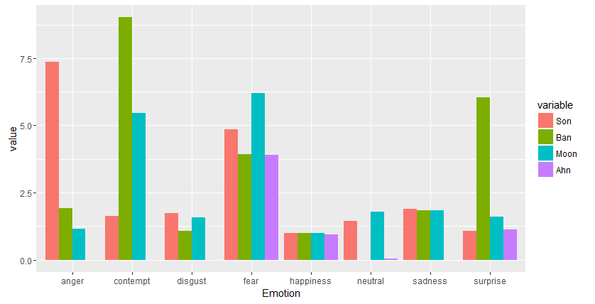

xwMOOC 딥러닝
옥스포드 - 감정 API
학습 목표
- 마이크로소프트 옥스포드 API를 이해한다.
- 유력 대선 후보들 사진에 나타난 감정을 분석한다.
1. 얼굴에 나타난 감정을 분석1
얼굴에 나타난 감정을 분석하는데 최근에 공개된 마이크로소프트 옥스포드 프로젝트 API를 R에서 활용한다.
httr 팩키지 덕분에 사용법은 무척이나 간결한다.
- 마이크로소프트 Congnitive Services에 무료로 가입한다.
- 마이크로소프트에서 제공하는 서비스마다 인증키를 잘 관리한다.
- Linguistic Analysis - Preview
- Face - Preview
- Computer Vision - Preview
- Emotion - Preview
- … 
- R에서 응용프로그램을 개발하고 마이크로소프트 제공 API를 호출하고 결과를 분석한다.
2. 감정을 분석할 유력 대선 후보들 사진
| 손학규 | 반기문 | 문재인 | 안철수 |
|---|---|---|---|
3. 이미지에 나타난 감정 분석 R 코드
이미지에 나타난 감정을 분석 R 코드하는 코드를 다음 순서로 작성한다.
- 작업 디렉토리와 더불어 라이브러리를 불러온다.
- 마이크로소프트
Emotion - Preview감정분석 API 서비스 접속 환경설정을 한다. emotion_fn함수를 만들어 이미지가 담긴 사진 URL을 넣으면 마이크로소프트 감정분석 API에 접속하여 감정분석결과를 받아오게 한다.- 사진에 나온 이미지 분석결과를 대선후별로 정리하여 시각화하여 분석을 마무리한다.
##==========================================================================================
## 00. 환경설정
##==========================================================================================
library("httr")
library("XML")
library("ggplot2")
setwd("~/10-microsoft-oxford")
##==========================================================================================
## 01. 마이크로소프트 API 설정
##==========================================================================================
# 적용할 마이크로소프트 API 지정
URL.emoface = 'https://api.projectoxford.ai/emotion/v1.0/recognize'
# 접속 인증키 설정
# emotionKEY = 'XXXXXXXXXXXXXXXXXXXXXXXXXXXXX'
source("private-keys.R")
##==========================================================================================
## 02. 감정분석할 이미지 지정 및 호출
##==========================================================================================
emotion_fn <- function(img.url){
mybody = list(url = img.url)
# 마이크로소프트에 API 호출 및 데이터 요청
faceEMO <- POST(
url = URL.emoface,
content_type('application/json'), add_headers(.headers = c('Ocp-Apim-Subscription-Key' = emotionKEY)),
body = mybody,
encode = 'json'
)
# 결과값 출력, Status=200 이면 모든 것이 OK!!!
return(faceEMO)
}
# 이미지 지정
son.url <- 'http://www.jungang.co/news/photo/201509/1051_603_841.jpg'
ban.url <- 'http://img.etoday.co.kr/pto_db/2012/04/20120424082942_194639_500_333.jpg'
moon.url <- 'http://www.hyundaenews.com/imgdata/hyundaenews_com/201601/2016011932479902.jpg'
ahn.url <- 'https://t1.daumcdn.net/thumb/R1280x0/?fname=http://t1.daumcdn.net/brunch/service/user/5ns/image/TtrYI3uNOJCsI-UmswcmJgRm5QQ.jpg'
son <- emotion_fn(son.url)
ban <- emotion_fn(ban.url)
moon <- emotion_fn(moon.url)
ahn <- emotion_fn(ahn.url)
##==========================================================================================
## 03. 감정분석결과 추가분석
##==========================================================================================
# 얼굴 분석결과
Son <- httr::content(son)[[1]]
Ban <- httr::content(ban)[[1]]
Moon <- httr::content(moon)[[1]]
Ahn <- httr::content(ahn)[[1]]
# 분석을 위해 결과값을 데이터프레임으로 변환
Son.o <-as.data.frame(as.matrix(Son$scores))
Ban.o <-as.data.frame(as.matrix(Ban$scores))
Moon.o <-as.data.frame(as.matrix(Moon$scores))
Ahn.o <-as.data.frame(as.matrix(Ahn$scores))
# Make some transformation
Son.o$V1 <- lapply(strsplit(as.character(Son.o$V1), "e"), "[", 1)
Ban.o$V1 <- lapply(strsplit(as.character(Ban.o$V1), "e"), "[", 1)
Moon.o$V1 <- lapply(strsplit(as.character(Moon.o$V1), "e"), "[", 1)
Ahn.o$V1 <- lapply(strsplit(as.character(Ahn.o$V1), "e"), "[", 1)
Son.o$V1 <-as.numeric(Son.o$V1)
Son.o$V1 <-as.numeric(Son.o$V1)
colnames(Son.o)[1] <- "Son"
Ban.o$V1 <-as.numeric(Ban.o$V1)
Ban.o$V1 <-as.numeric(Ban.o$V1)
colnames(Ban.o)[1] <- "Ban"
Moon.o$V1 <-as.numeric(Moon.o$V1)
Moon.o$V1 <-as.numeric(Moon.o$V1)
colnames(Moon.o)[1] <- "Moon"
Ahn.o$V1 <-as.numeric(Ahn.o$V1)
Ahn.o$V1 <-as.numeric(Ahn.o$V1)
colnames(Ahn.o)[1] <- "Ahn"
# 행명칭으로부터 감정 변수 생성
Son.o$Emotion<- rownames(Son.o)
# 후보데이터 취합
candidate.df <- cbind(Ban.o, Moon.o, Ahn.o, Son.o)
library(reshape2)
candidate.df.m <- melt(candidate.df, id.vars='Emotion')
candidate.df
ggplot(candidate.df.m, aes(Emotion, value)) +
geom_bar(aes(fill = variable), position = "dodge", stat="identity")> candidate.df
Son Ban Moon Ahn Emotion
anger 7.3542325 1.9190960000 1.1539198 0.0003854623 anger
contempt 1.6380774 9.0302870000 5.4720675 0.0047321445 contempt
disgust 1.7400689 1.0879935000 1.5798295 0.0011993845 disgust
fear 4.8542913 3.9310765800 6.1883204 3.9110790000 fear
happiness 0.9999851 0.9997778000 0.9999778 0.9383517000 happiness
neutral 1.4403704 0.0002112589 1.7898545 0.0547735900 neutral
sadness 1.9024080 1.8409718900 1.8538832 0.0005460684 sadness
surprise 1.0656165 6.0466163600 1.5935927 1.1286004300 surprise